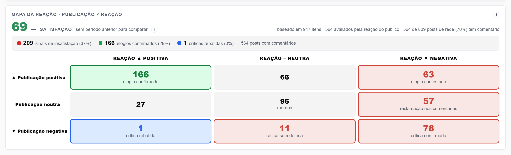
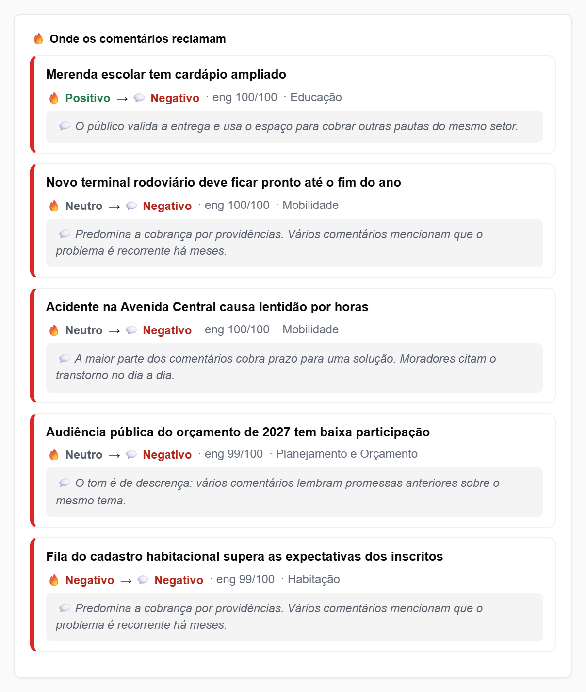
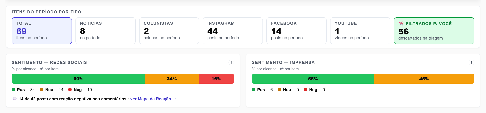
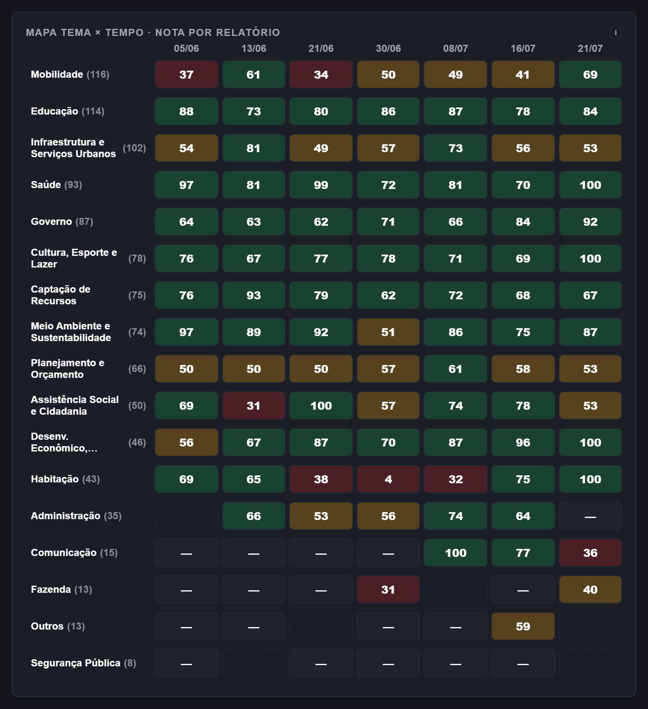
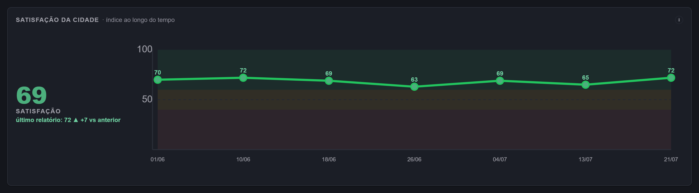
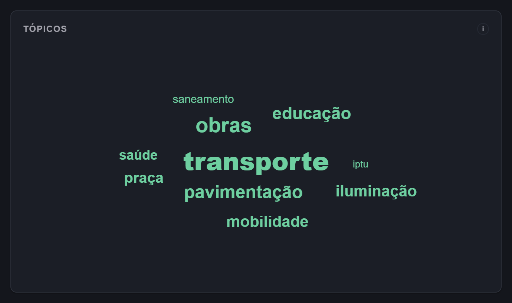
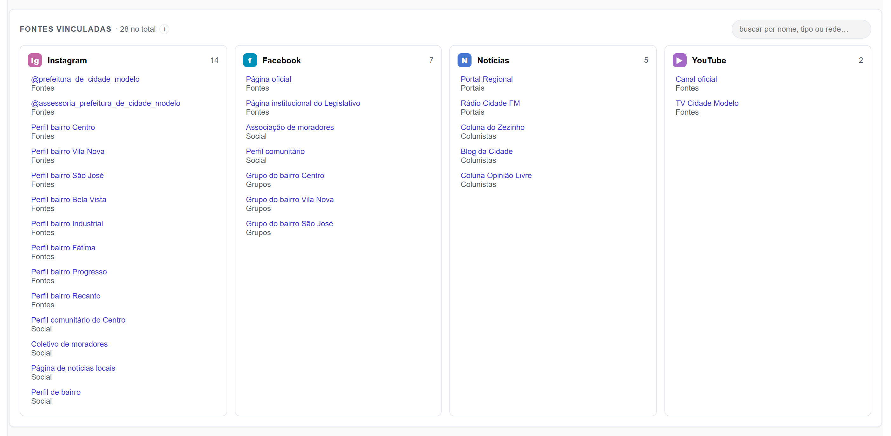

A sua cidade fala o dia inteiro. O que ela diz — e o que ela sente — chega pronto para você, todo dia.
Clipping da imprensa, monitoramento das redes e o índice de satisfação da sua cidade — sob o seu critério.
Monitoramento ativo em municípios do Rio Grande do Sul.
Uma crise não nasce na capa do jornal.
Ela nasce no grupo de bairro, no comentário embaixo do post, na live de um vereador às onze da noite. Quando chega ao jornal, já é tarde — e você foi o último a saber.
E o único retrato que existe hoje é a pesquisa de opinião — uma foto de um único dia. A cidade não para de falar entre uma pesquisa e outra.
Dois clientes na mesma cidade. Dois relatórios diferentes.
Uma ferramenta comum manda o mesmo relatório para todo mundo da mesma cidade. Aqui não. A cidade é lida uma vez, de forma neutra — mas o que chega até você é seu. Tanto que a mesma notícia pode ser verde para um cliente e vermelha para outro: cada um lê a cidade sob os próprios critérios.
Seus critérios de sentimento
O que é elogio, o que é cobrança: quem define é você.
Suas palavras-chave
O que não pode escapar, não escapa.
Seu critério escrito
Você descreve o que quer; a IA aplica item a item.
Suas fontes
Quer acompanhar um perfil ou portal a mais? A gente inclui.
Não é um recurso que se liga depois: o sistema nasceu desenhado para isso.
Ninguém precisa te marcar para você ficar sabendo.
As ferramentas comuns de social listening caçam quem citou o seu nome — o arroba da sua marca. A gente vai além: você diz os temas e serviços que importam — saúde, obras, transporte, segurança — e trazemos tudo o que a cidade falou sobre eles, mesmo quando ninguém marcou a prefeitura.
É a diferença entre saber que falaram de você e entender o que acontece na sua cidade.
Um morador reclama do posto de saúde do bairro num grupo de Facebook. Não citou a prefeitura, não marcou ninguém, não virou notícia. Amanhã cedo, isso está no seu relatório — na seção de Saúde.
Qual é a satisfação da sua cidade hoje?
Ninguém precisa ser entrevistado: a cidade já diz o que pensa todos os dias — nas notícias, nos posts, nos comentários públicos.
A nossa IA lê tudo isso e transforma no índice de satisfação da cidade: por tema e por secretaria, com a evolução no tempo. Quando a nota de um tema começa a cair, você vê a história antes de virar crise.
E separamos o que a publicação diz do que os comentários respondem: a matéria elogiosa que a população contesta, a crítica que os próprios moradores rebatem. No Mapa da Reação, cada combinação tem nome — e cada número leva ao item original.

Índice estimado do que a cidade publica e comenta — sem amostra, sem margem de erro, sem entrevista.
A sua cidade, entendida por dentro.
O bairro pesa mais que o país.
Uma cratera na sua rua vale mais que uma manchete nacional. Nossa régua é a sua cidade — não o Brasil.
Voz do Povo.
A matéria pode ser elogiosa e os comentários virarem contra. Medimos o tom da publicação e o tom da reação — separados.
Dois tons medidos, nunca um só.Lemos o que os outros não leem.
Texto, imagem, áudio e vídeo: transcrevemos a live, lemos o card do post, o carrossel inteiro e o corpo da notícia — não só o título.
Triagem implacável.
Você recebe pouco e bom. O que não interessa morre antes de chegar até você.
Nunca a mesma notícia duas vezes.
O que você já leu ontem não volta amanhã.
Sem bolha.
Mapeamos aliados e oposição. Você vê a cidade inteira — não só o que agrada.

Três entregas. Duas leituras. Uma contratação.
A mesma inteligência da sua cidade chega de três formas — e você pode ler pela imprensa (o clipping) ou pela reação da população (o monitoramento de redes). Tudo no mesmo pacote.
Clipping
Tudo o que falaram da sua cidade, item a item, todo dia — com uma riqueza que nenhum clipping tem.
Panorama do Dia
O curado: o que você não pode deixar de ver, em uma página.
Painel de Monitoramento
O histórico navegável: 7 dias, 30 dias, do jeito que você quiser consultar.
Entregues juntos, no mesmo pacote.Sem tabela de planos: cada cidade é configurada sob medida.
Agendar demonstração da sua cidadeTodo dia, tudo que falaram da sua cidade.
O clipping completo: toda publicação coletada na cidade que passou no seu critério. Imprensa e redes sociais no mesmo relatório. Se dois portais falaram do mesmo assunto, os dois estão lá — cobertura é isso.
E cada item vem com o que um clipping comum não te dá.
- Título e resumo editorial — não é recorte cru.
- Sentimento da publicação e sentimento dos comentários, separados.
- Voz do Povo — a síntese do que a população respondeu.
- Alcance, curtidas e comentários.
- Fonte, link e data — tudo rastreável.
- Os termômetros do dia — quanto se falou, e em que tom.
- Quantidades por tema.
- Distribuição de sentimento.

As decisões do dia cabem em uma página.
Se o Clipping traz tudo, o Panorama do Dia traz o que você não pode deixar de ver: as notícias mais importantes, sintetizadas, sem repetição e organizadas pelos temas que importam a você.
É a capa de jornal da sua gestão — e o que dói para o cidadão vai para o topo.
- A manchete do dia e o resumo em duas frentes: na imprensa e nas redes sociais.
- Alertas de serviços públicos — o que a cidade está cobrando agora.
- Secretarias impactadas — cada assunto já chega endereçado à pasta certa.
- Entregas e pautas positivas — o que jogou a favor.
- Voz do Povo por assunto.
O dia a dia vira histórico. E o histórico vira decisão.
O Clipping e o Panorama são do dia. O Painel é a memória da sua cidade: últimos 7 dias, 30 dias ou o período que você escolher. Ali você consulta do seu jeito — só os itens críticos, só uma rede, só uma fonte, um tema, uma palavra. E vê o clima da cidade em gráficos.
-
Visão geral
Os números do período, o termômetro de satisfação da cidade e os temas sensíveis — o que precisa da sua atenção primeiro.
-
Satisfação
O índice por tema e por secretaria, a evolução no tempo e o Mapa da Reação — publicação × comentários, célula por célula.
-
Pesquisa
O acervo inteiro, buscável por assunto e até pela reação — só os itens em que os comentários viraram contra, por exemplo.
-
Panorama do dia
A capa de qualquer data.
-
Meus dados
A sua configuração: temas, fontes e os seus critérios de sentimento.
Quer ver tudo isso com os dados da sua cidade?
Agendar demonstração da sua cidade


De onde vem tudo isso.
No período de implantação, mapeamos as fontes da sua cidade — uma a uma. Depois, é todo dia.

Peso da fonte · valor estimado de mídia · alcance · visualizações.
- Cobertura completa: se dois portais falaram do mesmo assunto, os dois entram.
- Portais nacionais e regionais, lidos pelo corpo da notícia — não só o título.
Peso da fonte · valor estimado de mídia · alcance.
- Colunas e opinião de quem influencia a conversa local.
- Autoria identificada, mesmo em textos multiautor.
Peso da fonte · alcance · visualizações.
- Lemos o carrossel inteiro, não só a capa.
- O texto dentro da imagem (OCR).
- A reação nos comentários.
Peso da fonte · alcance · visualizações.
- Páginas públicas de perfis, veículos e órgãos.
- A reação nos comentários, lida e resumida.
Peso da fonte · alcance.
- Onde a crise nasce, antes de virar notícia.
- Só grupos públicos — nunca fechados.
Peso da fonte · alcance · visualizações.
- Transcrevemos legendas e áudio — a live de duas horas vira texto pesquisável.
Peso da fonte · valor estimado de mídia.
- Pelos canais oficiais das emissoras — sites, portais e páginas públicas.
Você escolhe a cidade. A gente cuida do resto.
Você escolhe a(s) cidade(s).
Uma prefeitura acompanha o seu município. Um deputado acompanha a sua região inteira — quantas cidades precisar.
Mapeamos a cidade toda.
Prefeito, ex-prefeitos, todos os vereadores, mídias locais, colunistas, influenciadores, associações de bairro e sindicatos. Sem lado.
Você recebe só o que é seu.
Todo dia, no horário que escolher: o seu critério aplicado ao que a cidade falou.
Contratação por cidade — quantas você precisar. No ar em poucos dias.
Quem usa a AtaraxIA todo dia.
A pauta de hoje é o que a cidade falou ontem.
Secretário de comunicação e a equipe de imprensa — quem produz as notícias da cidade.
Você não recebe o clipping genérico da cidade: recebe o que vira a sua pauta, do jeito que você configurou — sem garimpar portal e grupo no olho.
Pedir apresentação- Clipping diário com tudo que passou na sua cidade.
- Panorama do Dia com os assuntos e a Voz do Povo.
- As fontes que você cadastrou, lidas e resumidas para você.
- O termômetro do que a cidade sente sobre cada tema — insumo pronto para a próxima campanha institucional.
- Pauta na mão — e base para a próxima nota oficial.
Cada secretaria tem o seu termômetro.
O núcleo político da gestão — vice-prefeito e a equipe dedicada a acompanhar a opinião pública.
Veja o que a cidade cobra de saúde, de obras, de transporte — endereçado à pasta certa, antes de virar crise. E sem depender de alguém marcar a prefeitura.
Pedir apresentação- Alertas do que está pegando fogo na cidade, em primeiro lugar.
- Assuntos separados por secretaria — saiba a qual pasta cada cobrança pertence.
- O índice de satisfação da cidade por secretaria, com a evolução — a nota de uma pasta caiu, você age antes da crise.
- Temas e serviços monitorados — mesmo sem citação à prefeitura.
- Imprensa, colunistas, redes e grupos de bairro num só lugar.
Ouça a cidade e responda na hora certa.
Candidatos e eleitos — vereador, prefeito, deputado — e quem coordena a comunicação.
A cidade fala das suas causas o dia todo — não só quando citam o seu nome. Você escolhe os temas que te movem e acompanha o termômetro de satisfação de cada um — como as secretarias de uma prefeitura, só que seus. E os critérios são seus: você define o que é favorável sob a sua ótica. Os outros nomes da disputa num espaço próprio, e quantas cidades o seu mandato precisar.
Pedir apresentação- Os temas e causas que te movem, monitorados o dia todo — mesmo quando não citam o seu nome.
- O termômetro de satisfação de cada causa, com a evolução no tempo.
- Os outros nomes da disputa num espaço próprio — acompanhados sem se misturar ao seu.
- Seus critérios: você define o que é favorável sob a sua ótica.
- Quantas cidades o seu mandato precisar, num só lugar.
Um motor, várias leituras sob medida.
Agências que atendem governos e campanhas e querem oferecer inteligência hiperlocal aos seus clientes.
Cada cliente com o seu ambiente, as suas cidades e os seus critérios — até critérios opostos na mesma cidade, cada um com a sua leitura, sem retrabalho. Institucional e campanha no mesmo fornecedor, dentro do seu pacote.
Pedir apresentação- Um ambiente próprio por cliente, configurado sob medida.
- Cidades sob demanda: assine só as que cada cliente precisa.
- Cobrança por cliente, sem pacote engessado.
- Um fornecedor cobrindo institucional e campanha.
Institucional e campanha correm em ambientes separados, sob o mesmo contrato.
Em todos os casos, quem abre o relatório é a assessoria — e a liderança recebe só o essencial.
Não é um app self-service. É um serviço gerenciado.
Sistema de prateleira não conhece a sua cidade nem os seus critérios. A implantação existe para isso: seus temas, suas fontes e o seu jeito de ler a cidade, construídos junto com você.
Você não vai configurar nada sozinho num painel em branco. A gente monta, você aprova.
Transparência e segurança em primeiro lugar.
Coletamos a cidade inteira. Sem lado.
Mapeamos todas as fontes do município — governo e oposição, mídia e rua. A coleta é da cidade, neutra. Você escolhe quais fontes acompanhar mais de perto.
Só o que é público.
Trabalhamos exclusivamente com fontes públicas. Perfil privado não é coletado — nem entra na nossa base.
Medimos o clima, não as pessoas.
Dos comentários, a IA lê tudo e devolve um resumo e um sentimento agregados. Não guardamos quem comentou. Medimos a temperatura da cidade — não vigiamos pessoas.
Dados no Brasil
Sua informação em servidores no país — menos atrito com a LGPD.
Só fontes públicas
Apenas conteúdo aberto. Nunca grupos fechados ou dados privados.
Sem rastreamento de indivíduos
Nenhum nome de cidadão, nenhum perfil individual armazenado.
Cada cliente no seu próprio ambiente.
Critérios, fontes e configurações não são compartilhados entre clientes — nem entre dois clientes da mesma cidade. O que você define é só seu.
Perguntas frequentes
Peça uma apresentação.
Não temos pacote de prateleira. Conte a sua cidade e o que você precisa acompanhar — a gente monta e mostra funcionando.